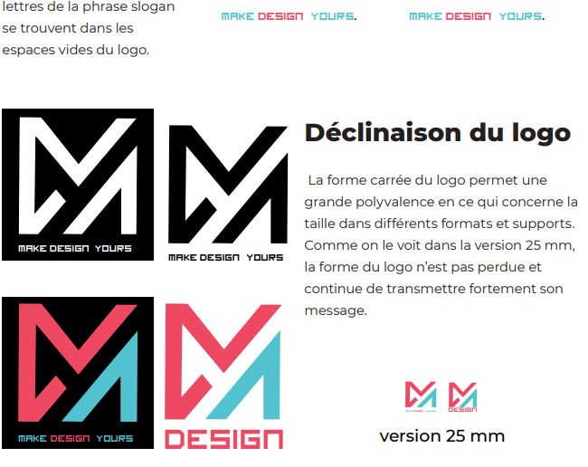

Adobe Illustrator
Dans mon premier travail pratique avec Adobe Illustrator, j'avais comme consigne de créer une identité graphique pour notre marque personnelle. Dans ce document réalisé en indesing on peut voir la justification du choix des couleurs, de la typographie et de la forme du logo.
Une animation de logo pour les supports vidéo et web a également été demandée dans l'exercice. L'animation a été réalisée dans Adobe After effect.